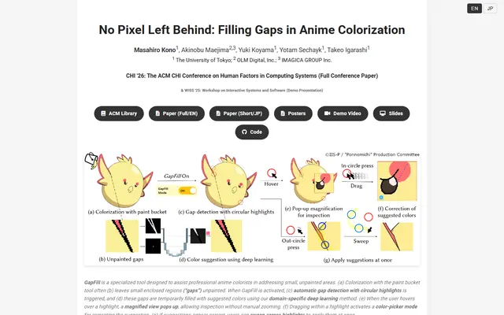
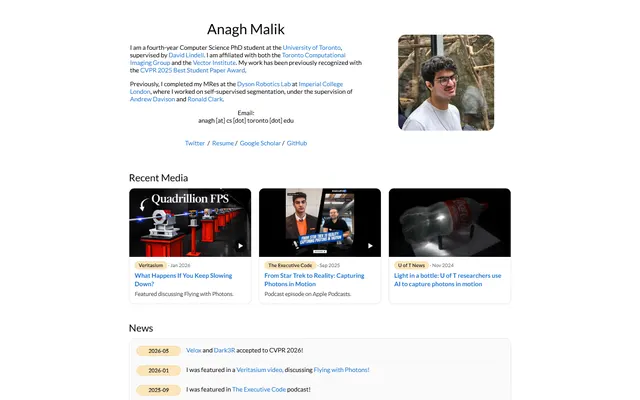
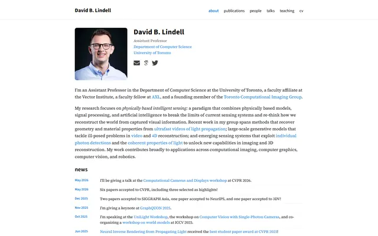
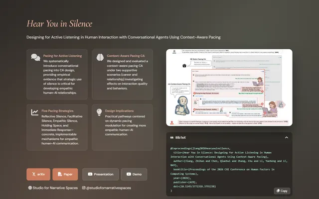
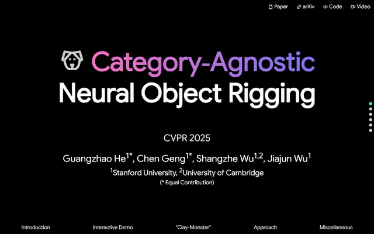
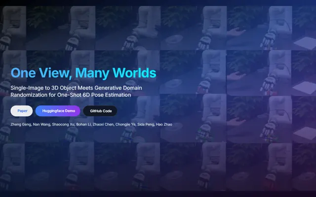

Collections
Groups of pages that share a template, a feature or a theme.
The Nerfies family 71
See allPages built on the Nerfies template or its descendant, the Academic Project Page Template.


Most of these share Bulma's grid, Google Sans titles and dark pill link buttons. Compare where authors departed from the defaults: a venue color, a custom teaser band, a results table style. Those small edits are what a DESIGN.md should record.
Built from scratch 102
See allProject pages that do not use a known academic template.


Custom pages show the wider range: editorial serif layouts, dark product-style launches, single-file HTML. Read the Layout and Components sections to see which choices carry the identity.
Show, don't tell 72
See allPages whose main evidence is interactive or comparative: sliders, 3D viewers, live demos.

When results are visual, the page layout is built around a comparison widget. Check how each page frames the widget and what it puts next to it.
Researcher homepages 50
See allAward-winning researchers, chosen by fixed rules (see About).






Homepages range from 1990s hand-written HTML to al-folio and Hugo themes. The Page Modules table shows how each orders bio, news and publications.
Code READMEs 40
See allREADME files of official code repositories for recent papers.


A README has fewer tools than a web page: Markdown, a little HTML, images and badges. Compare how each one orders the header, the teaser, the install steps and the citation block.
Dark and dual-theme pages 28
See allPages that ship a dark theme or a light/dark switch.





Dark academic pages are rare. Look at how surfaces step up in lightness and how figures with white backgrounds are handled.